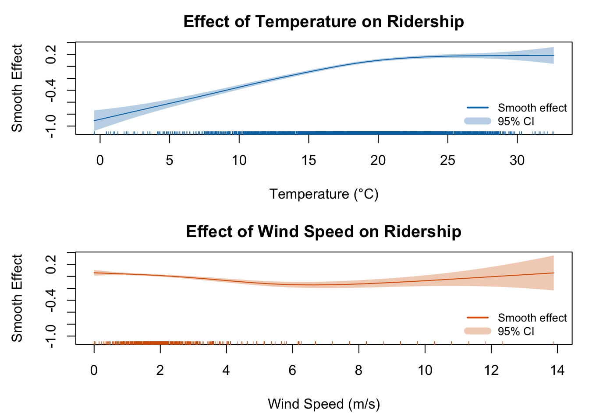

Below is a summary of the training and test set performance for each model.
| Model | \(R^2\) | RMSE | MAE | \(R^2\) | RMSE | MAE |
|---|---|---|---|---|---|---|
| Linear Regression (LM) | 0.826 | 360.692 | 251.108 | 0.830 | 347.020 | 245.548 |
| GLM (Negative Binomial) | 0.817 | 368.451 | 254.049 | 0.819 | 359.205 | 252.532 |
| GAM (Negative Binomial) | 0.829 | 355.891 | 246.153 | 0.833 | 343.998 | 246.577 |
| Random Forest (Default) | 0.965 | 174.114 | 122.431 | 0.845 | 336.344 | 250.219 |
| Random Forest (CV-Tuned) | 0.952 | 193.634 | 132.163 | 0.846 | 330.028 | 236.966 |
| XGBoost (Default) | 0.978 | 129.561 | 85.818 | 0.830 | 347.255 | 247.811 |
| XGBoost (CV-Tuned) | 0.905 | 268.267 | 184.694 | 0.845 | 331.139 | 238.871 |
Linear regression was used as a baseline model to understand how bike usage responds to weather features under the assumption of a linear relationship. After stepwise variable selection and Box-Cox transformations to stabilize variance, the final model included key predictors like hour of day, temperature, humidity, and weather condition. However, its limitations stem from the assumption of linear relationships, which may oversimplify the complex interactions between weather and bike usage.
Initially, a Poisson GLM was applied to model hourly bike trip counts, treating them as count data. However, model diagnostics revealed substantial overdispersion, violating the assumptions of the Poisson distribution. To address this, the final model used a Negative Binomial distribution, which better accounted for variance. The fitted model included hour, temperature, humidity, and weather conditions. The model confirmed expected effects, such as higher demand during commuting hours and lower usage under unfavorable weather.
To flexibly capture nonlinear patterns, a GAM with a Negative Binomial family was fitted using smooth terms for key continuous variables. The final model incorporated smooth splines for temperature and wind speed, allowing the effect of these variables to vary across their range. The results showed a sharp increase in ridership with temperature up to about 20°C before flattening, while wind speed had a steady negative impact. By relaxing linearity assumptions, the GAM uncovered important behavioral dynamics that were missed by simpler models.

Random Forests combine the predictions of many individual decision trees, using bootstrapped samples and random subsets of features to reduce variance and avoid overfitting. In this project, a tuned Random Forest model was selected using 5-fold cross-validation, with the final configuration using mtry = 4, ntree = 500, and nodesize = 10. This model consistently delivered strong predictive performance. The variable importance analysis revealed that hour of day and temperature were by far the most influential factors, indicating that temporal patterns and thermal comfort are key drivers of bikeshare usage in Toronto. The full hyperparameter grid used for tuning is detailed in Appendix B.
XGBoost (Extreme Gradient Boosting) is a powerful tree-based algorithm that builds models sequentially, where each tree focuses on correcting the errors of the previous one. After tuning through extensive cross-validation, the best-performing model used eta = 0.05, max_depth = 6, min_child_weight = 3, subsample = 0.8, and colsample_bytree = 1. This configuration balanced bias and variance well and produced accurate forecasts. Like Random Forest, XGBoost identified hour of day and temperature as the most critical predictors, though its feature importance plot showed a steeper concentration of influence on fewer variables, reflecting the model’s ability to prioritize the strongest signals in the data. The full hyperparameter grid used for tuning is detailed in Appendix B.